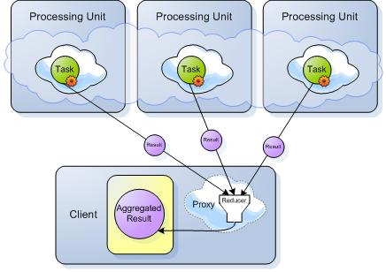

| Download |
|---|
| Executor example |
The Map-Reduce pattern is a popular pattern used in distributed systems to process data in parallel. This example illustrates the usage of Executors Remoting (Service Executors) and Task Executors to execute your business logic on a remote process that is collocated with a space in a parallel manner.
In both cases, the business logic will be invoked with a collocated space.
The example will illustrate a simple map-reduce implementation. A client writing some Account objects into the Data Grid. Later it will calculate the average balance for all the Accounts via a DistributedTask that is sent to each partition to be executed:
The Task will read all the Account objects at the collocated partition and calculate the average balance for these objects and return the result back to the client. The results sent from each partition back to the client will be aggregated (via the DistributedTask reducer implementation at the client side) and the final result will be displayed.

The example code will have the following implemented:
The Task implements the DistributedTask interface. It includes the execute and the reduce methods:
package org.test.executor;
import java.sql.Time;
import java.util.List;
import org.openspaces.core.GigaSpace;
import org.openspaces.core.executor.DistributedTask;
import org.openspaces.core.executor.TaskGigaSpace;
import com.gigaspaces.annotation.pojo.SpaceRouting;
import com.gigaspaces.async.AsyncResult;
public class MyTask implements DistributedTask<Integer, Integer>{
@TaskGigaSpace
transient GigaSpace space;
public Integer execute() throws Exception {
Account templ = new Account();
Account accounts[] = space.readMultiple(templ , Integer.MAX_VALUE);
int total = 0;
for (Account account : accounts) {
total += account.getBalance();
}
Time t = new Time(System.currentTimeMillis());
System.out.println(t + " MyTask execute called at "+space.getSpace().getURL().getContainerName() +
" - total is:" + total );
return total/accounts.length;
}
int routing;
@SpaceRouting
public Integer routing() {
return routing;
}
public Integer reduce(List<AsyncResult<Integer>> results) throws Exception {
Integer total_result =0;
int partitions=0;
for (AsyncResult<Integer> result : results) {
if (result.getException() != null) {
throw result.getException();
}
partitions++;
int temp_result = result.getResult().intValue();
total_result += temp_result ;
}
return total_result/partitions;
}
}
The client invokes the Task on the remote space in sync mode using the following:
space = new UrlSpaceConfigurer("jini://*/*/space").space();
gigaSpace = new GigaSpaceConfigurer(space).gigaSpace();
AsyncFuture<Integer> future =gigaSpace.execute(new MyTask());
Integer result = future.get();
The client invokes the Task on the remote space in A-sync mode using the following:
space = new UrlSpaceConfigurer("jini://*/*/space").space();
gigaSpace = new GigaSpaceConfigurer(space).gigaSpace();
gigaSpace.execute(new MyTask(),new ExecutorTaskClientMain ());
ExecutorTaskClientMain implements AsyncFutureListener:
public void onResult(AsyncResult<Integer> result) {
System.out.println(new Time(System.currentTimeMillis()) + " - Client got Result:" + result.getResult() );
}
Using IDE:
Set your IDE to have the following:
Click Run. This will start the clustered Apace within your IDE.
Using CLI:
To start the clustered Space with 2 partitions run the following:
\gigaspaces-xap\bin\bin>puInstance -cluster schema=partitioned total_members=2 ..\deploy\templates\datagrid
When you start the Space, make sure you see both partitions started before you run the client:
2010-12-17 14:02:20,453 INFO [com.gigaspaces.core.common] - Space [space_container1:space]
with url [/./space?cluster_schema=partitioned&total_members=2&id=1&schema=default&groups=gigaspaces-7.1.2-XAPPremium-ga&state=started]
started successfully
2010-12-17 14:03:04,187 INFO [com.gigaspaces.core.common] - Space [space_container2:space]
with url [/./space?cluster_schema=partitioned&total_members=2&id=2&schema=default&groups=gigaspaces-7.1.2-XAPPremium-ga&state=started]
started successfully
Run the Client Application (ExecutorTaskClientMain.java).
The ExecutorTaskClientMain requires the following as application arguments:
Sync mode:
org.test.executor.ExecutorTaskClientMain sync
Async mode:
org.test.executor.ExecutorTaskClientMain async
14:14:16 MyTask execute called at space_container1 - total is:24500
14:14:16 MyTask execute called at space_container2 - total is:25000
14:14:17 MyTask execute called at space_container1 - total is:24500
14:14:17 MyTask execute called at space_container2 - total is:25000
14:14:18 MyTask execute called at space_container1 - total is:24500
14:14:18 MyTask execute called at space_container2 - total is:25000
14:14:19 MyTask execute called at space_container1 - total is:24500
14:14:19 MyTask execute called at space_container2 - total is:25000
14:14:20 MyTask execute called at space_container2 - total is:25000
14:14:20 MyTask execute called at space_container1 - total is:24500
14:14:21 MyTask execute called at space_container1 - total is:24500
14:14:21 MyTask execute called at space_container2 - total is:25000
14:14:22 MyTask execute called at space_container2 - total is:25000
14:14:22 MyTask execute called at space_container1 - total is:24500
14:14:23 MyTask execute called at space_container1 - total is:24500
14:14:23 MyTask execute called at space_container2 - total is:25000
14:14:24 MyTask execute called at space_container1 - total is:24500
14:14:24 MyTask execute called at space_container2 - total is:25000
14:14:25 MyTask execute called at space_container1 - total is:24500
14:14:25 MyTask execute called at space_container2 - total is:25000
Sync Executor example started
Log file: C:\gigaspaces-xap-premium-7.1.2-ga\logs\2010-12-17~14.14-gigaspaces-service-207.172.165.179-6516.log
14:14:16 - Client calling MyTask execute sync
14:14:16 - Client got Result:495
14:14:17 - Client calling MyTask execute sync
14:14:17 - Client got Result:495
14:14:18 - Client calling MyTask execute sync
14:14:18 - Client got Result:495
14:14:19 - Client calling MyTask execute sync
14:14:19 - Client got Result:495
14:14:20 - Client calling MyTask execute sync
14:14:20 - Client got Result:495
14:14:21 - Client calling MyTask execute sync
14:14:21 - Client got Result:495
14:14:22 - Client calling MyTask execute sync
14:14:22 - Client got Result:495
14:14:23 - Client calling MyTask execute sync
14:14:23 - Client got Result:495
14:14:24 - Client calling MyTask execute sync
14:14:24 - Client got Result:495
14:14:25 - Client calling MyTask execute sync
14:14:25 - Client got Result:495
You can view the Space operations statistics by running the \gigaspaces-xap\bin\gs-ui:
The example will have a clustered space with a collocated service running. A client will be invoking the service:
The results created at each partition will be sent to the client. These will be aggregated via the reducer implementation at the client side and displayed:

This example illustrates simple Service Executors usage in Synchronous mode and Asynchronous mode. Your code should have the following implemented:
The Service Interface includes 2 methods. One used to invoke the Service method in Synchronous mode and another used to invoke the Service method Asynchronous mode:
import com.gigaspaces.async.AsyncFuture;
public interface IDataProcessor {
Integer processData(Object data);
AsyncFuture<Integer> asyncProcessData(Object data);
}
The Service Implementation includes some business logic for both of these methods:
import java.sql.Time;
import org.openspaces.core.GigaSpace;
import org.openspaces.core.cluster.ClusterInfo;
import org.openspaces.core.cluster.ClusterInfoContext;
import org.openspaces.core.context.GigaSpaceContext;
import org.openspaces.remoting.RemotingService;
import com.gigaspaces.async.AsyncFuture;
@RemotingService
public class DataProcessorService implements IDataProcessor {
@ClusterInfoContext
public ClusterInfo clusteinfo;
@GigaSpaceContext
transient GigaSpace gigaSpace;
public AsyncFuture<Integer> asyncProcessData(Object data)
{
return null;
}
public Integer processData(Object data) {
Account templ = new Account();
Account accounts[] = gigaSpace.readMultiple(templ , Integer.MAX_VALUE);
int total = 0;
for (Account account : accounts) {
total += account.getBalance();
}
Time t = new Time(System.currentTimeMillis());
System.out.println(t + " MyTask execute called at "+gigaSpace.getSpace().getURL().getContainerName() + " - total is:" + total );
return total/accounts.length;
}
}
The pu.xml used to export the Service and start the space described below:
<?xml version="1.0" encoding="UTF-8"?>
<beans xmlns="http://www.springframework.org/schema/beans"
xmlns:xsi="http://www.w3.org/2001/XMLSchema-instance"
xmlns:context="http://www.springframework.org/schema/context"
xmlns:os-core="http://www.openspaces.org/schema/core"
xmlns:os-events="http://www.openspaces.org/schema/events"
xmlns:os-remoting="http://www.openspaces.org/schema/remoting"
xsi:schemaLocation="http://www.springframework.org/schema/beans http://www.springframework.org/schema/beans/spring-beans.xsd
http://www.springframework.org/schema/context http://www.springframework.org/schema/context/spring-context.xsd
http://www.openspaces.org/schema/core http://www.openspaces.org/schema/core/openspaces-core.xsd
http://www.openspaces.org/schema/events http://www.openspaces.org/schema/events/openspaces-events.xsd
http://www.openspaces.org/schema/remoting http://www.openspaces.org/schema/remoting/openspaces-remoting.xsd">
<!-- Support @RemotingService component scanning -->
<context:component-scan base-package="org.test.executor"/>
<os-core:giga-space-context/>
<!-- Support the @RemotingService annotation on a service-->
<os-remoting:annotation-support />
<os-core:embedded-space id="space" name="space" />
<os-core:giga-space id="gigaSpace" space="space"/>
<os-remoting:service-exporter id="serviceExporter" />
</beans>
The context:component-scan , os-remoting:service-exporter and os-remoting:annotation-support used to allow the system to locate classes annotated with RemotingService and export these implicitly.
The Service Result Reducer is called at the client side and aggregates results sent from all invoked services (collocated with all space partitions).
The Reducer implements the RemoteResultReducer interface:
import org.openspaces.remoting.RemoteResultReducer;
import org.openspaces.remoting.SpaceRemotingInvocation;
import org.openspaces.remoting.SpaceRemotingResult;
public class DataProcessorServiceReducer implements RemoteResultReducer<Integer, Integer>{
public Integer reduce(SpaceRemotingResult<Integer>[] results, SpaceRemotingInvocation sri) throws Exception {
int total_result =0;
for (int i =0 ;i<results.length ; i++)
{
int temp_result = results[i].getResult().intValue();
total_result += temp_result ;
}
return total_result/results.length ;
}
}
The client invokes the service in Synchronous mode using the following:
IJSpace space = new UrlSpaceConfigurer("jini://*/*/space").space();
GigaSpace gigaSpace = new GigaSpaceConfigurer(space).gigaSpace();
IDataProcessor dataProcessor = new ExecutorRemotingProxyConfigurer<IDataProcessor>
(gigaSpace, IDataProcessor.class).broadcast(new DataProcessorServiceReducer()).proxy();
Integer result = dataProcessor.processData("A" + count);
System.out.println(new Time(System.currentTimeMillis()) + " - Client got Result:" + result.intValue() );
ExecutorRemotingProxyConfigurer. The DataProcessorServiceReducer is used when constructing Service proxy .Using IDE:
Set your IDE to have the following:
Click Run. This will start the clustered space and the Services within your IDE.
Using CLI:
To start the clustered space with 2 partitions and export the Service run the following:
\gigaspaces-xap\bin\bin>puInstance -cluster schema=partitioned total_members=2 \ExecutorExample\classes
Where the \ExecutorExample\classes should include the processing unit pu.xml under META-INF\spring\pu.xml and relevant Service class files.
When you start the space make sure you see both partitions started before you run the client:
2010-12-17 14:02:20,453 INFO [com.gigaspaces.core.common] - Space [space_container1:space]
with url [/./space?cluster_schema=partitioned&total_members=2&id=1&schema=default&groups=gigaspaces-7.1.2-XAPPremium-ga&state=started]
started successfully
2010-12-17 14:03:04,187 INFO [com.gigaspaces.core.common] - Space [space_container2:space]
with url [/./space?cluster_schema=partitioned&total_members=2&id=2&schema=default&groups=gigaspaces-7.1.2-XAPPremium-ga&state=started]
started successfully
Run the Client Application (ExecutorClientMain.java) using the following:
org.test.executor.ExecutorClientMain sync
14:12:18 MyTask execute called at space_container2 - total is:25000
14:12:18 MyTask execute called at space_container1 - total is:24500
14:12:19 MyTask execute called at space_container1 - total is:24500
14:12:19 MyTask execute called at space_container2 - total is:25000
14:12:20 MyTask execute called at space_container1 - total is:24500
14:12:21 MyTask execute called at space_container2 - total is:25000
14:12:22 MyTask execute called at space_container2 - total is:25000
14:12:22 MyTask execute called at space_container1 - total is:24500
14:12:23 MyTask execute called at space_container2 - total is:25000
14:12:23 MyTask execute called at space_container1 - total is:24500
14:12:24 MyTask execute called at space_container2 - total is:25000
14:12:24 MyTask execute called at space_container1 - total is:24500
14:12:25 MyTask execute called at space_container2 - total is:25000
14:12:25 MyTask execute called at space_container1 - total is:24500
14:12:26 MyTask execute called at space_container2 - total is:25000
14:12:26 MyTask execute called at space_container1 - total is:24500
14:12:27 MyTask execute called at space_container2 - total is:25000
14:12:27 MyTask execute called at space_container1 - total is:24500
Sync Service Executor example started
Log file: C:\gigaspaces-xap-premium-7.1.2-ga\logs\2010-12-17~14.12-gigaspaces-service-207.172.165.179-6472.log
14:12:18 - Client calling sync dataProcessor
14:12:18 - Client got Result:495
14:12:19 - Client calling sync dataProcessor
14:12:19 - Client got Result:495
14:12:20 - Client calling sync dataProcessor
14:12:21 - Client got Result:495
14:12:22 - Client calling sync dataProcessor
14:12:22 - Client got Result:495
14:12:23 - Client calling sync dataProcessor
14:12:23 - Client got Result:495
14:12:24 - Client calling sync dataProcessor
14:12:24 - Client got Result:495
14:12:25 - Client calling sync dataProcessor
14:12:25 - Client got Result:495
14:12:26 - Client calling sync dataProcessor
14:12:26 - Client got Result:495
14:12:27 - Client calling sync dataProcessor
14:12:27 - Client got Result:495
You can view the space operations statistics by running the \gigaspaces-xap\bin\gs-ui: